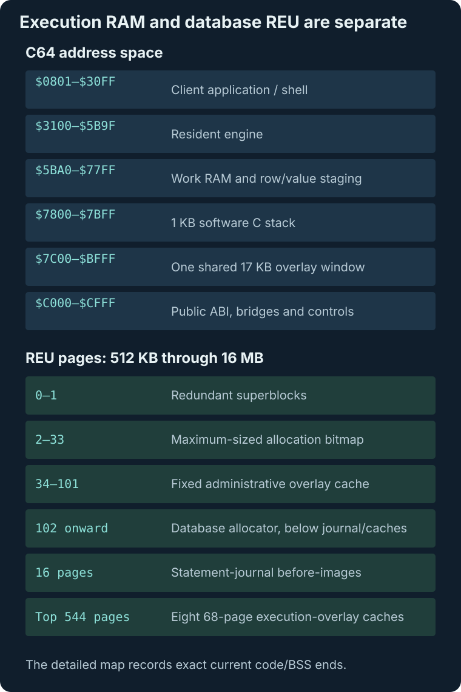

C64 and REU Memory Map
There are two maps to keep separate: C64 address space holds the client and active execution phase, while the REU holds persistent pages, rollback before-images and cached overlays. Fixed boundaries are checked after linking.

The active overlay occupies one C64 window. Its other payloads are cached in reserved REU regions, outside the database allocator.
C64 RAM
$0801-$30FF: client application; must remain untouched by engine loading, BSS, stack, or DMA staging. The interactive shell is the largest special client layout: code/data plus its 161-byte line buffer end at$3080, leaving$3081-$30FFfree before the engine.$3100-$5B9F: resident engine region. Current code ends at$5B9C.$5BA0-$77FF: work RAM, row/value staging, parser workspace, and two shared 256-byte metadata scratch pages. Shared BSS currently ends at$7700; the shell/export adapter is the largest current APPBSS and ends at$77DE, leaving$77DF-$77FFbefore the fixed C stack.$7800-$7BFF: reserved 1KB cc65 software C stack.$7C00-$BFFF: shared 17KB overlay window. RAM is exposed under BASIC ROM while executing code in$A000-$BFFF. Current ends are metadata$BFF6, row/aggregate$BFEF, parser$BF71, executor/index/lifecycle$BFDD, joined/subquery shaping$BFBE, ordinary result shaping$BF9B, joined/correlated aggregation$BFBC, administration$BFEA, and direct wide execution/shaping$BB38.$C000-$CFFF: public JMP table, phase-neutral query glue, and resident BASIC-ROM float trampoline. The jump table is fixed at$C000, with checkpoint at$C01Band restore at$C01E. Normal ABI code ends at$CFEE;$CFEFis the Peddle BASIC-FLOAT activity marker and$CFF0-$CFF6are automation controls. A final resident predicate bridge occupies$CFF7-$CFFE;$CFFFis the checkpoint test-adapter handshake. The post-link verifier checks every fixed address and boundary.
REU
REU addresses are 24-bit. The detected size is converted to a page count from 2,048 pages (512KB) through 65,536 pages (16MB).
- Page 0: superblock A.
- Page 1: superblock B.
- Pages 2-33: allocation bitmap reservation.
- Pages 34-101: fixed administrative sidecar cache.
- Pages 102 through
page_count-561: database allocator. - The following 16 pages are statement-journal before images.
- Top 544 pages: eight 68-page (17KB) overlay slots.
Why the cache reservations are fixed
The shell reuses the caches. Direct wide execution owns the eighth top slot; administration remains fixed at pages 34-101. This reservation is recorded by storage version 4 so older raw images cannot be opened with overlapping data.
Capacity-independent page identities
The bitmap is deliberately reserved at its maximum size on every supported REU so physical page identities and format offsets do not depend on capacity.